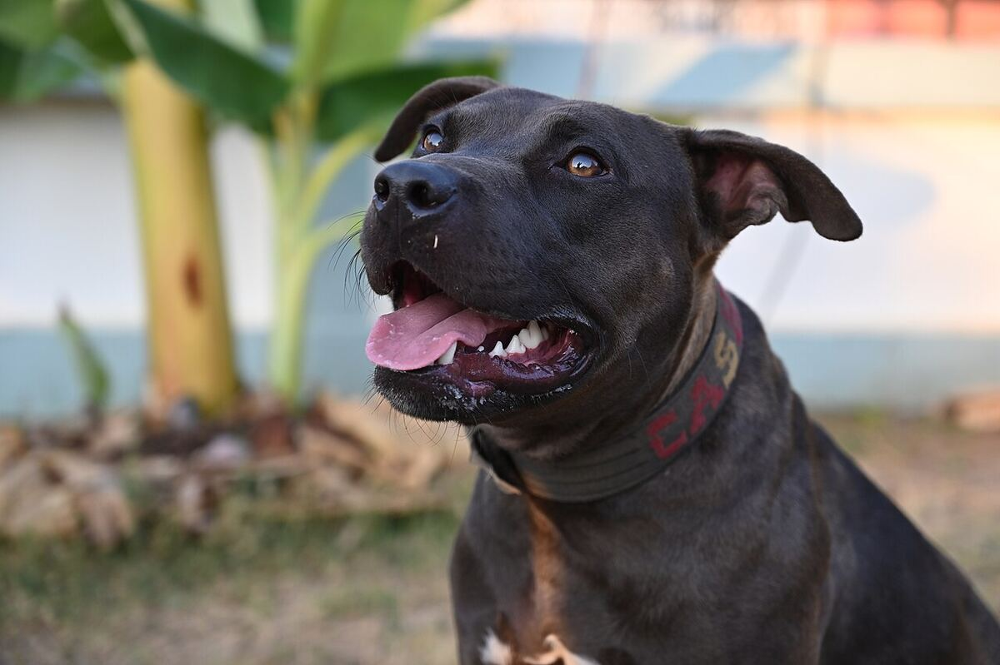
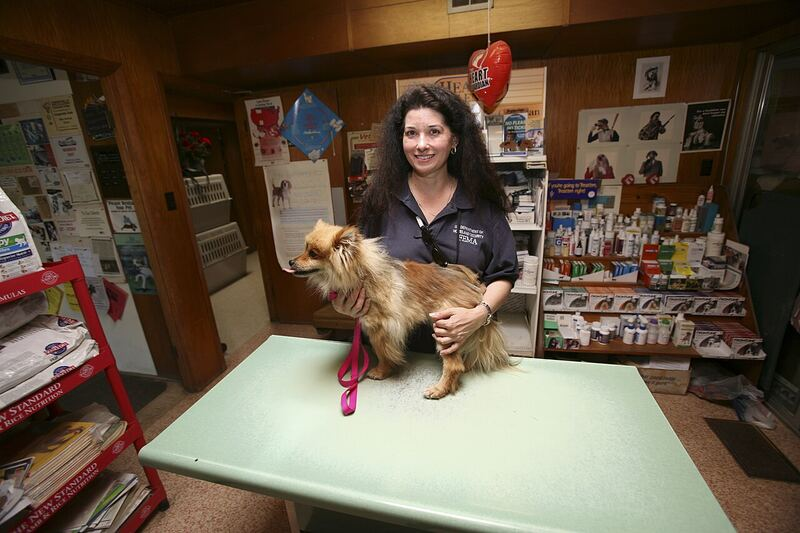
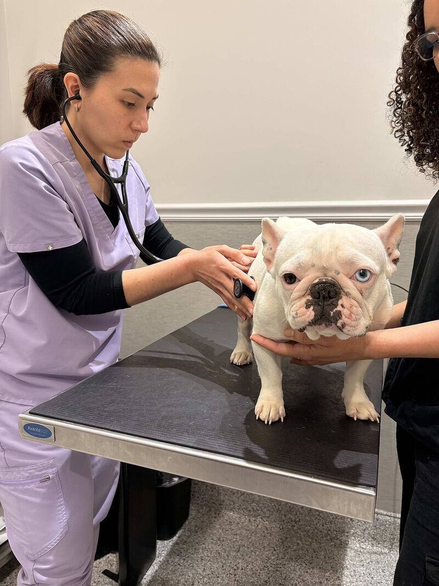
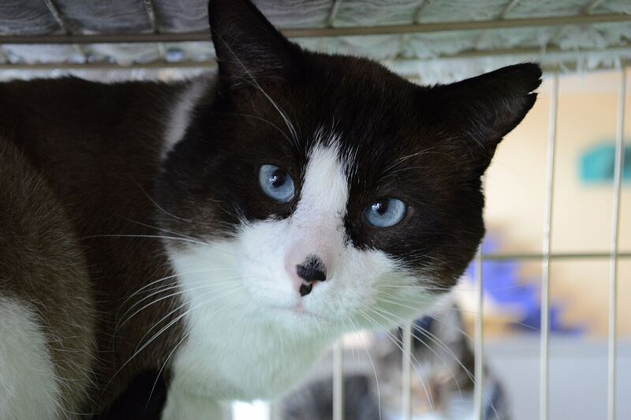

Rescatando Huellas facilita el reporte, la localización y el seguimiento de mascotas perdidas, encontradas o en situación de riesgo. Ante terremotos, inundaciones u otros desastres, activa un modo de emergencia que prioriza los casos de las zonas afectadas y conecta con refugios, veterinarias y voluntarios cercanos.

Durante emergencias como terremotos o inundaciones, los animales pueden perderse, quedar heridos o necesitar un lugar seguro, mientras sus responsables tienen dificultades para encontrar y compartir información rápidamente. Rescatando Huellas nace para integrar en un mismo espacio el reporte de mascotas, su ubicación, el seguimiento de su rastro y la coordinación con voluntarios, refugios y servicios veterinarios — con especial prioridad para las zonas en emergencia.
Cuatro frentes de trabajo, pensados para usarse rápido y bajo presión.

Cuando se activa una emergencia, la app prioriza visual y funcionalmente los reportes, solicitudes de ayuda y puntos de atención de la zona afectada, para que lo urgente no se pierda entre lo demás.

Consulta en el mapa los puntos de ayuda disponibles cerca de un caso: refugios con cupos, veterinarias con atención disponible y voluntarios listos para colaborar.

Publica animales disponibles para adopción, consulta su situación y manifiesta interés en adoptar, todo dentro del mismo espacio donde se reportó y atendió el caso.
Avistamientos, actualizaciones de estado y el rastro completo de cada caso, compartido con quienes están ayudando a encontrarlo.
Pensado para reportar en pocos pasos, incluso bajo presión.
Mascota perdida, encontrada o en situación de riesgo: foto, ubicación y datos básicos.
Avistamientos, voluntarios y puntos de ayuda cercanos se coordinan alrededor del caso.
El rastro del caso queda visible hasta que se cierra: a salvo, en refugio o reencontrada.
Politécnico Grancolombiano — Gerencia de Proyectos Informáticos
María Paula Vargas Torres
José Miguel Vélez Ramírez
Jonathan Franco Santana
Edinson Hernández Cubillos